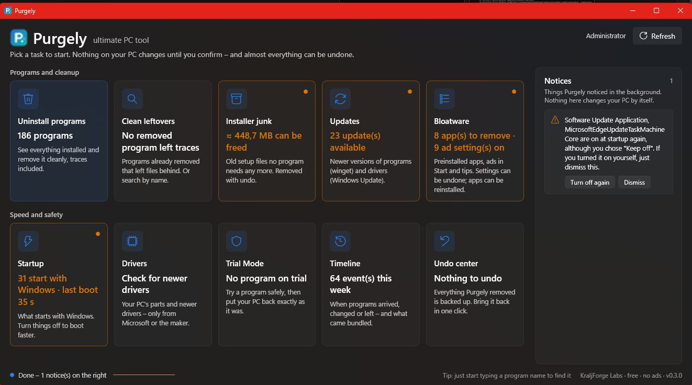

Clean your PC without the fear of breaking it.
Purgely removes programs completely, clears what they leave behind, gets rid of bloatware and Windows ads, and keeps programs and drivers up to date. Every item explains itself – and almost everything can be undone.

One tool instead of five
Uninstaller, cleaner, debloater, updater and startup manager – built around one idea: understand what a file or setting is before touching it.
Uninstall completely
Programs, Store apps and portable apps – also many at once, quietly where possible. Then one scan finds what they left behind.
Leftovers, found properly
Folders on every drive, registry, services, tasks, startup entries, right-click menus, file types, firewall rules and PATH.
Bloatware, ads & AI
Preinstalled apps with a clear verdict, ads in Start and on the lock screen, Recall and Copilot switches, browser extensions.
Updates you can trust
Programs through Windows Package Manager. Drivers only signed, only from Microsoft or your PC's maker – never driver sites.
Faster start-up
See what starts with Windows and how heavy it is. Turn off or delay items – Purgely only optimizes what it knows is safe.
Undo center
Before anything is removed it is backed up – on the same drive, so even big games are quick. One click puts it back.
Safe by default
People click whatever a cleaner recommends. So Purgely only ticks what it can prove – and says how sure it is, in words.
- Never removes your own files, or anything another program still uses
- Weak evidence (only a matching name) is offered, never ticked
- Never follows links out of a folder, never deletes structural Windows keys
- Backup first, verified – then remove
- Every release is built by GitHub Actions with tests and a safety audit
Get started in a minute
Purgely is a single file. Nothing is installed, nothing runs in the background.
Download
Get Purgely.exe from Releases. SHA256SUMS.txt lets you check it.
Start it
Windows asks for administrator rights. During the beta Windows may warn about an unknown app – More info → Run anyway.
Run Checkup
One look at the whole PC. Purgely fixes only what it is sure about – and you can undo it.
Testing the beta? What to try and how to report it.